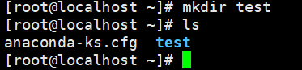
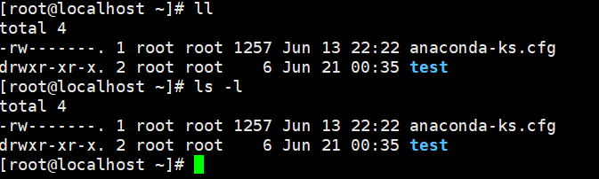
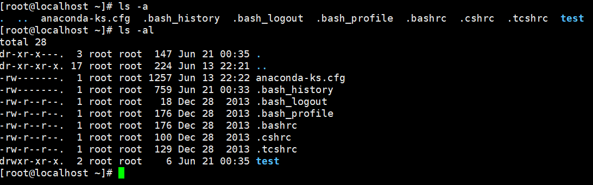
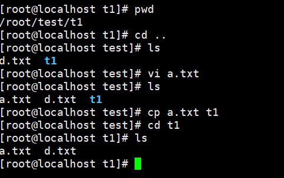
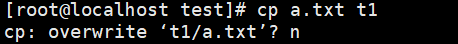
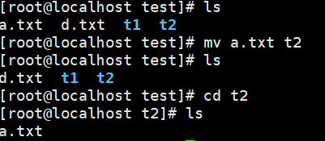
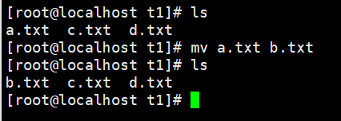
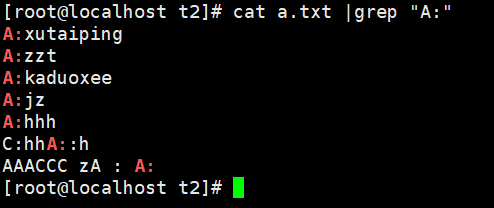

linux常用命令
Linux常用命令
cd
cd 切换目录，change directory
cd .. 返回上级目录
cd dir 切换到dir目录
cd / 回到根目录
cd ~ 切换到当前用户目录
pwd
查看当前目录
mkdir
创建目录，mkdir test
在当前路径下新建一个test目录。
ls
ls 查看当前目录下内容
ls -l 可以缩写为 ll 查看当前目录下内容详细信息（文件类型、读写权限、创建者、大小、创建时间、文件名）
ls -a 查看目录下包括隐藏文件在内的全部内容。
ls -al 列出全部内容的详细信息 ll -a 与之等价。
rm
rm -rf test 删除test路径。
rm -f a.txt 删除文件a.txt。
vi
vi a.txt 创建文件
创建文件后按 Esc 再按 :wq 可以保存当前文件。
i 编辑文件
vi a.txt 创建或者进入a.txt文件后
按 i 键编辑文件。
linux系统命令行界面下不能使用鼠标。
在编辑文件时，可以使用H,J,K,L键来控制光标，依次为左、下、上、右；也可以直接使用方向键。
也可以通过 数字 + 方向键 来快速移动光标。
ctrl + f ：向下翻页。
ctrl + b ：向上翻页。
ctrl + d ：向下翻半页。
ctrl + u ：向上翻半页。
数字 + 空格 ：光标向后移 “数字” 个字符。
g + g ：回到首行。
G ：去到末行。
num + G：跳转到第 “num” 行。
d + d：删除当前行。
/ + 关键词 ：向下查找。
? + 关键词 ：向上查找。
u ：撤销。
ctrl + r：回退撤销。
0 ：行首。
$ ：行尾。
tail
tail a.txt： 列出a.txt最后10行。
tail -num a.txt： 列出a.txt最后 num 行。
(当我们用vi编辑文件时，实际上是复制了文件内容在对其进行修改，最后wq保存时用新文件覆盖旧文件，
echo msg >> a.txt 才是直接对文件进行修改，追加内容)
tail -F a.txt： 追踪文件名a.txt（）
tail -f a.txt ： 追踪文件a.txt (用vi编辑文件时该命令无法追踪文件)
cp
cp a.txt b.txt 将a.txt文件复制一份到当前路径，并命名为b.txt
cp a.txt t1 将a.txt复制到当前路径的子路径t1下，也命名为a.txt
如果t1路径下已有a.txt文件，会提示是否覆盖，输入y代表重写，舍弃旧文件；n代表不重写，保留旧文件。
mv
剪切，移动 还可以给文件重命名
mv a.txt t2 将当前路径下a.txt文件移动到 t2路径下
mv a.txt b.txt 将a.txt文件改名为b.txt文件。
gerp
过滤，筛选， 语法： 常规命令 |grep “关键词”
示例：
1 | tail -20 a.txt |grep "A:" |
cat
全文查找，类似于mysql的select *。
语法：cat a.txt ，该命令会打印出a.txt文件的全部内容，可配合grep使用类似于mysql中
1 | select * from a.txt where * like "%关键字%"; |
示例：cat a.txt |grep “A:”
whereis
语法：whereis + 命令 ，查看名函数所在的位置
示例：
1 | [root@localhost t2]# whereis less |
find
用于查找文件等内容的位置。(在当前目录及其所有子目录下查找)
示例：find -name a.txt
1 | [root@localhost /]# cd lib |
更多查找命令：传送门
echo $PATH
查看环境变量目录。
1 | [root@localhost t2]# echo $PATH |
which
which 命令 ，在环境变量目录中查找该命令确切位置
示例：which whereis; which find.
1 | [root@localhost ~]# which whereis |
1 | [root@localhost ~]# which i |
top
打开任务管理器
1 | [root@localhost ~]# top |